โครงสร้างและ Content ย้ายมาครบ (URL ตรงกับ bwell.co.th 100% จาก Sitemap 349 URL) แต่ยังมี link หลุดไปหา preview site ของ agency, CTA ที่กดแล้วไม่ไปไหน, Store Locator ที่แผนที่ไม่ขึ้น และ Tracking ซ้ำซ้อน 3 ชั้น ซึ่งจะทำให้ตัวเลข GA4 / ROAS เพี้ยนตั้งแต่วันแรกที่เปิด
สิ่งที่ทำได้ดี: Hero message ใหม่ชัด (Home Environment Wellness → "รู้สึกดีได้ในทุกวันกับ Bwell"), category grid 12 หมวดครบ, Blog 157 บทความย้ายมาครบ, มี Cookie consent (Complianz) รองรับ PDPA, Facebook Pixel + GTM ติดตั้งแล้ว, ทุกลิงก์ไป shop.bwell.co.th (40 SKU) ใช้งานได้จริง
ทั้ง 6 ข้อนี้ผู้ใช้เจอทันทีในหน้าแรกหรือกระทบทุกหน้า ต้องปิดให้หมดก่อน DNS cutover
| # | Where | Issue | Impact | Fix | Owner |
|---|---|---|---|---|---|
| P0-1 | Footer "หน้าเพจ" — ทุกหน้า (10 links) | ลิงก์ เกี่ยวกับ Bwell / ทำไมต้อง Bwell / ลูกค้าของเรา / บทความ / ช่องทางจัดจำหน่าย / ค้นหาสาขา / ติดต่อเรา / Privacy / Cookies / Shipping ชี้ไป bwell-redesign-preview.netlify.app (preview site ของ agency) | User หลุดออกจากเว็บไปหน้า preview ที่ไม่มี tracking ไม่มี shop และ agency ปิดได้ทุกเมื่อ | แก้ footer menu ให้เป็น relative path ภายในเว็บ แล้ว search-replace domain netlify ทั้ง DB | Web Dev |
| P0-2 | Home (section เครื่องฟอกอากาศ) และ About Us | ปุ่ม "อ่านเพิ่มเติม" ลิงก์ไป /why-bwell/ → 404 (หน้าจริงคือ /whybwell/) | CTA หลักของ hero category พัง | เปลี่ยน link เป็น /whybwell/ หรือเพิ่ม 301 redirect | Web Dev |
| P0-3 | Home — section "โบรชัวร์สินค้าของเรา" | ปุ่ม "ขอรับโบรชัวร์สินค้า" และ "สอบถามผ่าน LINE" ไม่มี href (กดแล้วไม่ไปไหน) | Lead-gen CTA 2 จุดสุดท้ายของหน้าแรกไม่ทำงาน; LINE คือ channel หลักของการปิดการขาย | LINE → https://lin.ee/xULzTdA (ใช้อยู่แล้วในหน้า category); โบรชัวร์ → link PDF บน Drive/CDN หรือ form CF7 | Web Dev + Marketing (ไฟล์โบรชัวร์) |
| P0-4 | /findbwell/ (ค้นหาสาขาของ Bwell) | WP Store Locator ไม่โหลด Google Maps API (ไม่มี API key) → แผนที่ว่าง, ไอคอน search ในเมนูมือถือหาย, label เป็นอังกฤษ (Your location / Results / Search) | หน้า Offline retail (Central, HomePro, PowerBuy) ใช้งานไม่ได้เลย | ใส่ Google Maps API key ใน WPSL settings + restrict key ตาม domain ใหม่; แปล label เป็นไทย; ตรวจว่ามีสาขาใน DB ครบ | Web Dev |
| P0-5 | Site-wide — Launch configuration | ยังเป็นค่า staging ทั้งหมด: meta robots noindex,nofollow ทุกหน้า · robots.txt Disallow Googlebot ทั้งเว็บ · Sitemap ใช้ http:// · ไม่มี canonical · html lang="en-US" · og:locale en_US · ไม่มี og:image · internal link ทุกอันเป็น absolute URL ของ hostingersite | ถ้าลืมข้อใดข้อหนึ่ง = หายจาก Google ทันทีหลัง launch หรือ link ทั้งเว็บชี้กลับ staging | ทำเป็น launch checklist (ดู section 07): ปลด noindex, แก้ robots.txt, search-replace domain, Yoast → canonical + og:image default, ตั้ง Site Language = ไทย | Web Dev |
| P0-6 | Tracking — ทุกหน้า | GA4 ยิงซ้ำ 3 property พร้อมกัน: G-6G579VY226 (gtag ฝังมือ), G-ECSJE4X7ZW (WooCommerce GA plugin), G-W1KG7QPGYP (Site Kit) + GTM GTM-M2KZX2K + Meta Pixel 599495719004394 ผ่าน PixelYourSite | Pageview / Session นับซ้ำหรือกระจาย 3 property → Dashboard, ROAS, Attribution เพี้ยน | เหลือ GTM ตัวเดียวเป็น container; ย้าย GA4 + Meta Pixel + TikTok Pixel เข้า GTM; ปิด gtag ฝังมือ, ปิด GA ใน Site Kit และ Woo GA plugin; ยืนยัน property ID ที่ทีมใช้จริงกับ Bass | Web Dev + Marketing (ยืนยัน property) |
ไม่ block การ launch แต่กระทบ conversion และความน่าเชื่อถือโดยตรง ควรปิดใน sprint แรกหลัง launch หรือก่อนถ้าทัน
| # | Where | Issue | Recommendation | Owner |
|---|---|---|---|---|
| P1-1 | Commerce model — ทุกหน้าสินค้า | เว็บอยู่ใน Flatsome "catalog mode" ปุ่มซื้อทุกปุ่มเด้งออกไป shop.bwell.co.th แต่ยังเปิดหน้า /cart/, /checkout/, /my-account/, Login/Register ในเมนูมือถือ และมี Omise, YITH Stripe, YITH Subscription ติดตั้งอยู่ | ตัดสินใจ 1 ทาง: (A) Catalog + redirect ไป shop.bwell.co.th → ซ่อน cart/checkout/my-account/login, ปิด payment plugin หรือ (B) ขายบนเว็บนี้เลย → เปิด cart ให้ครบ flow. แนะนำ (A) ในระยะสั้น เพื่อไม่แยก inventory และ order 2 ระบบ | Bass (decision) → Web Dev |
| P1-2 | Home "สินค้าแนะนำ", Category pages | ปุ่มเขียนว่า "หยิบใส่ตะกร้า" แต่กดแล้วเปิด tab ใหม่ไป shop.bwell.co.th (ไม่ได้ใส่ตะกร้า) | เปลี่ยน label เป็น "สั่งซื้อที่ Bwell Shop" หรือ "ซื้อเลย" ให้ตรงกับพฤติกรรมจริง | Web Dev |
| P1-3 | /contact/ | มีแค่ที่อยู่ + เบอร์ 2 สาขา ไม่มี Contact form, ไม่มี Email, ไม่มี LINE, ไม่มี Social; typo "วันอาิทตย์" (ต้องเป็น วันอาทิตย์) | เพิ่ม LINE OA button, Email (sales / corporate), CF7 form (ชื่อ, เบอร์, สนใจสินค้าหมวดไหน, ประเภทลูกค้า บุคคล/องค์กร), Social icons; แก้ typo | Content + Web Dev |
| P1-4 | Category pages เช่น /air-purifier-bwell/ | แสดง "สินค้าขายดี" แค่ 4 SKU แล้วจบ ไม่มี grid สินค้าทั้งหมดในหมวด; block บทความท้ายหน้าเครื่องฟอกอากาศแสดงบทความ "หวีม้วนผม / ไดร์เป่าผม" (คนละหมวด) | เพิ่ม product grid ทั้งหมวด (หรือปุ่ม "ดูสินค้าทั้งหมด" ไป product-category) และ filter บทความตาม category ของหน้านั้น | Web Dev |
| P1-5 | Product page เช่น Bjorn | Description ซ้ำ 2 รอบ (feature list โผล่สองครั้ง), thumbnail gallery มีรูปแตก 2 รูป, ไม่มีตาราง Spec / SKU / Warranty summary, meta description = "bwell-เก้าอี้เพื่อสุขภาพ รุ่น Bjorn" | ทำ template product ให้มี: Key benefits → Spec table → Warranty → FAQ → Related; ลบ content ซ้ำ; อัปโหลดรูป gallery ใหม่ | Content + Web Dev |
| P1-6 | Home "ความคิดเห็นจากผู้ใช้จริง" | Review 4 อัน ชื่อและข้อความดู generic (Patcharin, Manunya, Suppawut, Pattaraa) ไม่ระบุสินค้า / วันที่ / แหล่งที่มา | ใช้ review จริงจาก Shopee / Lazada / Google พร้อมชื่อรุ่น + platform + rating; หรือ embed widget | Marketing |
| P1-7 | Home "ตัวแทนจำหน่าย" / "ลูกค้าของเรา" | โลโก้ห้าง (The Mall ฯลฯ) และโรงพยาบาลเป็นรูปนิ่ง ไม่มี link; section ตัวแทนออนไลน์: TikTok ชี้ไป profile @bwell.group ไม่ใช่ TikTok Shop; NocNoc มีแค่ใน footer | ลิงก์โลโก้ห้างไป Store Locator (filter ตามห้าง), TikTok → TikTok Shop URL, เพิ่ม NocNoc ในกลุ่มเดียวกัน (Shopee / Lazada / TikTok Shop / NocNoc) | Marketing + Web Dev |
| P1-8 | UI strings ทั่วเว็บ | ข้อความระบบยังเป็นอังกฤษ: Home (breadcrumb), Search for:, Login / Register, Username or email address, Description, Related products, Quick View, Products Archive, Default sorting, Uncategorized, "Posted on July 13, 2026 by Pongsathorn", Comments Off, "Your cart is currently empty" | ตั้ง Site Language = ไทย + Loco Translate สำหรับ WooCommerce / Flatsome strings; ซ่อน author + comments meta ในบทความ | Web Dev |
| P1-9 | /shop/ (สินค้าทั้งหมด) | Sidebar โชว์ category "Best seller", "Bwell Subscription", "Uncategorized"; ชื่อหมวดปนไทย-อังกฤษ; หน้าโหลด 10 วินาที (TTFB) ในการ crawl | ซ่อนหมวด internal/ว่าง, ตั้งชื่อหมวดให้เป็นระบบเดียว, เปิด LiteSpeed Cache + object cache บน Hostinger | Web Dev |
| P1-10 | Home "สินค้าแนะนำ" | 4 SKU ที่แนะนำคือ แผ่นฟอกอากาศ, เครื่องกรองน้ำ RO, เก้าอี้ Bjorn, เครื่องทำน้ำอุ่น FELIX — ไม่มีเครื่องฟอกอากาศซึ่งเป็น hero category ของหน้า | ให้ Marketing กำหนด featured SKU ตาม campaign calendar (Q4: เครื่องฟอกอากาศ + เครื่องลดความชื้น) และเปลี่ยนได้จาก WooCommerce "Featured" | Marketing |
| P1-11 | Google Translate widget | โหลด translate_a/element.js ทุกหน้า โดยตั้ง includedLanguages = "es" (สเปน) และไม่แสดงตัวสลับภาษา | ถอดออก (ลด 1 external request + JS) หรือถ้าต้องการ EN ให้ทำ EN page แยกแทน | Web Dev |
| # | Area | Finding | Recommendation | Owner |
|---|---|---|---|---|
| P2-1 | Meta description | ไม่มีใน 22 จาก 40 หน้า รวม About Us, ทำไมต้อง Bwell, ติดต่อเรา, Blog, ช่องทางจัดจำหน่าย, ลูกค้าของเรา, FAQ, Warranty, Policy ทุกหน้า, product FELIX | เขียน meta description 120–155 ตัวอักษรทุกหน้าหลัก (template ใน Yoast สำหรับ product / post) | Content |
| P2-2 | Title tag | Home title ยาว 95 ตัวอักษร; หน้า generic: "About Us | Bwell", "FAQ | Bwell", "Sport Gadgets | Bwell", "Products Archive | Bwell", "Cart | Bwell", "My account | Bwell" | Home ≤ 60 ตัวอักษร เช่น "Bwell เครื่องฟอกอากาศ เครื่องกรองน้ำ เก้าอี้เพื่อสุขภาพ | Home Environment Wellness"; แปลและใส่ keyword ในหน้าที่เหลือ | Content |
| P2-3 | H1 | ไม่มี H1: Blog, Contact, FAQ, Find Bwell, Privacy, Shipping policy, Shop, Cart · มี H1 ซ้ำ 2 อัน: User manual, RO product, Warranty policy | 1 H1 ต่อหน้า ตรงกับ title; Flatsome page title block ตั้งเป็น H1 | Web Dev |
| P2-4 | Image alt | 530 จาก 787 รูปไม่มี alt (Home 31/40, Bjorn 39/49, RO 26/41) | ใส่ alt เป็นชื่อรุ่น + ประโยชน์ เช่น "Bwell เครื่องฟอกอากาศ AP-H3029US กรอง PM2.5 40-80 ตร.ม." ผ่าน Media Library bulk | Content |
| P2-5 | Footer SEO text (ทุกหน้า) | บล็อกข้อความ "เครื่องฟอกอากาศ คืออะไร?" ยาว ~700 คำ ซ้ำทุกหน้า และมี typo "เครืองฟอกอากาศ Activated Carbon" | ย้าย content นี้ไปไว้เฉพาะหน้า /air-purifier-bwell/ (duplicate content ทุกหน้าไม่ช่วย SEO) และแก้ typo | Content |
| P2-6 | Structured data | มี Organization / WebSite / Breadcrumb / Article แล้ว แต่ product page ยังไม่พบ Product schema พร้อม price / availability (ตรวจหลังตัดสินใจ P1-1) | ถ้าเลือก catalog mode ให้เปิด Yoast WooCommerce SEO หรือใส่ Product schema เอง พร้อม offers.url ชี้ shop.bwell.co.th | Web Dev |
| P2-7 | Social / OG | อ้างอิง Facebook 2 เพจไม่ตรงกัน: facebook.com/bwellgroup (Yoast) กับ facebook.com/Bwell.Healthcare (link ในเว็บ); ไม่มี og:image default | ยืนยันเพจทางการ 1 เพจ; ตั้ง default OG image 1200×630 ใน Yoast | Marketing |
| P2-8 | Blog | 157 โพสต์ย้ายครบ; หน้า Blog ไม่มี H1 / meta; บทความล่าสุดเป็น Hair styling ทั้งหมด (13 ก.ค. 2026) | วาง Content calendar Q4 ให้ครอบคลุม Air (PM2.5 season) + Dehumidifier (ฝน) + Water; internal link จากบทความไปหน้า category | Marketing |
| P2-9 | URL / redirect | Staging มี URL ครบเท่ากับ live (0 URL หาย) + เพิ่ม /shipping-policy/, /pm25-air-purifier/; live มี /privacypolicy/ และ staging ใช้ /privacy-policy/ | Export redirect map ก่อน launch: 301 จาก slug เก่าที่เปลี่ยน (เช่น privacypolicy → privacy-policy) และ monitor 404 ใน Search Console 2 สัปดาห์แรก | Web Dev |
| Item | Observed | Recommendation |
|---|---|---|
| Tag inventory | GTM-M2KZX2K · GA4 ×3 (ดู P0-6) · Meta Pixel 599495719004394 (PixelYourSite) · ไม่มี TikTok Pixel · ไม่มี Heatmap | รวมทุก tag ใน GTM; เพิ่ม TikTok Pixel + Microsoft Clarity (ฟรี) เพื่อดู behavior หลัง launch; ตั้ง GA4 event: click_shop_bwell, click_marketplace (Shopee/Lazada/TikTok), click_line, submit_warranty, click_call |
| Page weight (Home) | HTML 263 KB · 50 script tags · 16 stylesheets · รูปรวม ~1.07 MB (35 รูป) · รูปใหญ่สุด 317 KB PNG (thumbnail บทความ) และ 120 KB PNG (TheMall logo) | เปิด LiteSpeed Cache (Hostinger) + CSS/JS minify และ delay JS; convert PNG → WebP ผ่าน WP Compress ที่ติดตั้งอยู่แล้ว; ลด plugin ที่โหลด script ทุกหน้า |
| Server response | เฉลี่ย ~2.1 วินาทีต่อหน้า (ผ่าน proxy); /shop/ 10.3 วินาที, /warranty-policy/ 6.7 วินาที, Home 3.4 วินาที | ตรวจ TTFB จาก Thailand ด้วย PageSpeed Insights / WebPageTest หลังเปิด cache; target LCP < 2.5 วินาที บนมือถือ |
| Fonts | Google Fonts โหลด Lato + Dancing Script (ไม่เห็นใช้งาน) และ Noto Sans Thai | ตัด font ที่ไม่ใช้; ดูข้อ Brand ด้านล่าง |
| Plugins ที่ซ้ำหน้าที่ | Popup Maker + AYS Popup Box (popup 2 ตัว) · Site Kit + gtag ฝังมือ + Woo GA + GTM4WP + PixelYourSite (tracking 5 ตัว) · Omise + YITH Stripe + YITH Subscription Premium (payment ในโหมด catalog) | เหลือ popup 1 ตัว, tracking = GTM4WP อย่างเดียว, ปิด payment plugin ถ้าเลือก catalog mode (ลด attack surface + license cost) |
| Security / hygiene | เปิด xmlrpc.php และ REST wp-json link ใน head; WordPress 7.1 / Woo 11.1 เป็น version ล่าสุด (ดี) | ปิด XML-RPC, จำกัด login attempts, ตั้ง auto-update สำหรับ plugin security |
| Cookie consent | Complianz GDPR ติดตั้งแล้ว | ตั้ง banner ภาษาไทยและ link ไป /cookies-policy/; ยืนยันว่า GTM ยิงหลัง consent |
| Element | Brand guideline | On staging | Action |
|---|---|---|---|
| Primary color | #005D9D (navy) | ใช้ #005D9D ถูกต้องใน header / hero / footer แต่ปุ่ม "สั่งซื้อสินค้า" บนหน้า product ใช้ #159BD7 (inline style) และ CTA บางจุดใช้ #2167A8 / #14558B | กำหนด CSS variable เดียว --bwell-navy:#005D9D ใน child theme และลบ inline style |
| Typography | DB Helvethaica X (TH/EN), Poppins (EN), Kanit (TH) | Noto Sans Thai (body/heading) + Lato + Dancing Script จาก Google Fonts; ไม่มี DB Helvethaica X / Poppins / Kanit | โหลด Kanit + Poppins จาก Google Fonts (ฟรี) และ self-host DB Helvethaica X (license) สำหรับ heading; ลบ Lato / Dancing Script |
| Logo | Logo Bwell (pantone) | Header ใช้ไฟล์ปี 2022 logoBwell_pantone-Bwell-เดี่ยว-02.png; footer ใช้ Bwell_logo-2021-01-1400x371.png (41 KB สำหรับพื้นที่ 200px); logo มือถือหน้า Contact แสดงเป็นรูปแตกใน screenshot (ต้อง verify) | ใช้ SVG logo เวอร์ชันเดียวทั้งเว็บ; ตรวจ sticky/mobile logo setting ใน Flatsome |
| Tone of voice | Health & safety, ไม่แข่งราคา | Hero และ category copy ตรง positioning ดี; แต่ review generic และ copy บางจุดเน้น "ราคาประหยัด" (เครื่องกรองน้ำ) | ปรับ copy หมวดเครื่องกรองน้ำเป็น benefit ด้านความปลอดภัย / มาตรฐาน แทนราคา |
| Product naming | ชื่อรุ่นเดียวกันทุก channel | ชื่อสินค้าบนเว็บ ("เครื่องฟอกอากาศกำจัดไวรัส รุ่น AP-H3029US") ต่างจาก shop.bwell.co.th ("เครื่องฟอกอากาศขนาด 40-80 ตรม 8 ขั้นตอน รุ่น AP-H3029US") | ทำ master naming sheet แล้ว sync ทั้งเว็บ, shop, marketplace |
/why-bwell/ (P0-2), ปุ่มโบรชัวร์ + LINE (P0-3)antiquewhite-rabbit-277082.hostingersite.com → www.bwell.co.th ทั้ง DB (รวม netlify) · ปลด noindex ใน Yoast + Settings › Reading · แก้ robots.txt · regenerate sitemap เป็น https · ตั้ง Site Language ไทย · ใส่ redirect map (P2-9) · ยืนยัน SSL · submit sitemap ใน Search Console · ตรวจ GTM ยิงบน domain จริง| URL | Title | H1 | No alt | Flags |
|---|---|---|---|---|
/ | Bwell จำหน่ายเครื่องฟอกอากาศ เก้าอี้เพื่อสุขภาพ เครื่องกรองน้ำ เครื่อง | รู้สึกดีได้ในทุกวันกับ Bwell | 31/40 | title >60, slow 3.4s |
/ช่องทางจัดจำหน่าย/ | ช่องทางจัดจำหน่าย | Bwell | ช่องทางจัดจำหน่าย | 14/16 | no meta desc |
/นโยบายการจัดส่งสินค้า/ | นโยบายการจัดส่งสินค้า | Bwell | — | 6/8 | no meta desc, no H1 |
/ลูกค้าของเรา/ | ลูกค้าของเรา | Bwell | ลูกค้าของเรา | 10/12 | no meta desc |
/about-us/ | About Us | Bwell | เกี่ยวกับ Bwell | 10/13 | no meta desc |
/air-dehumidifier/ | เครื่องดูดความชื้น เครื่องลดความชื้น กำจัดความชื้น เชื้อรา และกลิ่น | เครื่องลดความชื้น | 13/23 | title >60 |
/air-purification-filters/ | แผ่นฟอกอากาศ กรองฝุ่น เชื้อโรค คุณภาพสูง| Bwell | แผ่นฟอกอากาศ | 13/23 | OK |
/air-purifier-bwell/ | เครื่องฟอกอากาศ เครื่องกรองอากาศ กรองฝุ่น pm2.5 | Bwell | เครื่องฟอกอากาศ | 13/22 | OK |
/air-purifier-user-manual/ | คู่มือการใช้งานเครื่องฟอกอากาศ Bwell | Bwell | วิธีเปลี่ยนและรีเซ็ตแผ่นฟอกอากาศ / คำถามที่พบบ่อย | 14/16 | multi H1 |
/blog/ | บทความ | Bwell | — | 6/17 | no meta desc, no H1 |
/blog/knowledge/เครื่องม้วนผมไฟฟ้า-เลือ/ | เครื่องม้วนผมไฟฟ้า เลือกอย่างไรให้เหมาะกับสภาพผม ลุคที่ต้องการ และการใ | เครื่องม้วนผมไฟฟ้า เลือกอย่างไรให้เหมาะกับสภาพผม ลุคที่ต้องก | 19/21 | no meta desc, title >60 |
/blog/knowledge/electric-curling-hair-brush-what | หวีม้วนผมไฟฟ้า คืออะไร? เลือกอย่างไรให้เหมาะกับสภาพผมและการใช้งาน | Bw | หวีม้วนผมไฟฟ้า คืออะไร? เลือกอย่างไรให้เหมาะกับสภาพผมและการใ | 13/20 | title >60 |
/blog/knowledge/fast-hair-dryer-how-it-works-and | ไดร์เป่าผมแห้งไว หลักการทำงาน เทคโนโลยี เลือกอย่างไรให้เหมาะกับสภาพผม | ไดร์เป่าผมแห้งไว หลักการทำงาน เทคโนโลยี เลือกอย่างไรให้เหมาะ | 15/21 | title >60 |
/blog/water-purifier/water-filter-for-home-and-c | ข้อแนะนำการเลือกเครื่องกรองน้ำสำหรับบ้านและคอนโดมิเนียม เลือกให้เหมาะก | ข้อแนะนำการเลือกเครื่องกรองน้ำสำหรับบ้านและคอนโดมิเนียม เลือ | 7/20 | title >60 |
/bwell-ergonomic-chair/ | เก้าอี้เพื่อสุขภาพ | Bwell | เก้าอี้เพื่อสุขภาพ | 13/23 | OK |
/cart/ | Cart | Bwell | — | 6/8 | no meta desc, no H1 |
/contact/ | ติดต่อเรา | Bwell | — | 10/12 | no meta desc, no H1 |
/cookies-policy/ | นโยบายการใช้คุกกี้ (Cookies Policy) | Bwell | นโยบายการใช้คุกกี้ | 6/8 | no meta desc |
/ergonomic-cushion-bwell/ | เบาะรองนั่งเพื่อสุขภาพ เมมโมรี่โฟม Cool Gel | หมอนรองหลังและเบาะพิงหลั | หมอนและเบาะรองเพื่อสุขภาพ | 13/23 | title >60 |
/faq/ | FAQ | Bwell | — | 6/8 | no meta desc, no H1 |
/findbwell/ | ค้นหาสาขาของ Bwell | Bwell | — | 6/8 | no meta desc, no H1 |
/hair-styling-tools/ | อุปกรณ์จัดแต่งทรงผม | เครื่องจัดแต่งทรงผมครบทุกไอเท็ม | Bwell | อุปกรณ์จัดแต่งทรงผม | 13/23 | title >60 |
/my-account/ | My account | Bwell | My account | 6/8 | no meta desc |
/my-account/lost-password/ | My account | Bwell | My account | 6/8 | no meta desc |
/portable-air-conditioner/ | แอร์เคลื่อนที่ Bwell เครื่องปรับอากาศเคลื่อนที่ เย็นฉ่ำ ราคาพิเศษ | แอร์เคลื่อนที่ | 13/21 | title >60 |
/privacy-policy/ | นโยบายความเป็นส่วนตัวของข้อมูล (Privacy Policy) | Bwell | — | 6/8 | no meta desc, no H1 |
/product-bwell/ | สินค้า | Bwell | สินค้าทั้งหมด | 21/23 | no meta desc |
/product/ชุดแผ่นฟอกอากาศ-a09f1d-1/ | ชุดแผ่นฟอกอากาศ A09F1D-1 | Bwell | ชุดแผ่นฟอกอากาศ A09F1D-1 | 16/26 | OK |
/product/เครื่องกรองน้ำ-ro-แบบไร้ถ/ | เครื่องกรองน้ำ RO แบบไร้ถัง | Bwell | เครื่องกรองน้ำ RO แบบไร้ถัง / สอบถามข้อมูลเพิ่มเติม | 26/41 | multi H1 |
/product/bwell-bjorn-black/ | Bwell เก้าอี้ Ergonomic รุ่น Bjorn สีดำ | Bwell | Bwell เก้าอี้ Ergonomic รุ่น Bjorn สีดำ | 39/49 | OK |
/product/bwell-water-heater-felix-3500w/ | Bwell เครื่องทำน้ำอุ่น FELIX ขนาด 3,500 วัตต์ | Bwell | Bwell เครื่องทำน้ำอุ่น FELIX ขนาด 3,500 วัตต์ | 30/40 | no meta desc |
/robot-vacuum/ | หุ่นยนต์ดูดฝุ่น หุ่นยนต์ถูพื้น | หุ่นยนต์ดูดฝุ่นทำความสะอาดอัจฉริยะ | | หุ่นยนต์ดูดฝุ่น | 13/22 | title >60 |
/shop/ | Products Archive | Bwell | — | 17/32 | no meta desc, no H1, slow 10.3s |
/sport-gadgets/ | Sport Gadgets | Bwell | อุปกรณ์ออกกำลังกาย | 13/20 | no meta desc |
/vacuum-cleaner/ | เครื่องดูดฝุ่นไร้สาย Bwell รางวัล Reddot Award สำหรับผู้ที่เป็นภูมิแพ้ | เครื่องดูดฝุ่นไร้สาย | 13/22 | title >60 |
/warranty-policy/ | นโยบายคืนเงิน และ รับประกันสินค้า | Bwell | นโยบายการเคลมสินค้าและคืนเงิน / นโยบายการรับประกัน | 6/8 | no meta desc, multi H1, slow 6.7s |
/warranty/ | ลงทะเบียนรับประกันสินค้า | Bwell | นโยบายรับประกันสินค้า | 6/8 | no meta desc |
/water-heater-bwell/ | เครื่องทำน้ำอุ่น เครื่องทำน้ำร้อน (Water Heater) | พร้อมระบบที่ทันสมัย | เครื่องทำน้ำอุ่น น้ำร้อน | 13/23 | title >60 |
/water-purifier/ | เครื่องกรองน้ำ RO กรองน้ำดื่มสะอาด เครื่องกรองน้ำดื่ม Bwell | เครื่องกรองน้ำ | 13/23 | OK |
/whybwell/ | ทำไมต้อง Bwell | Bwell | ทำไมต้อง Bwell | 10/12 | no meta desc |
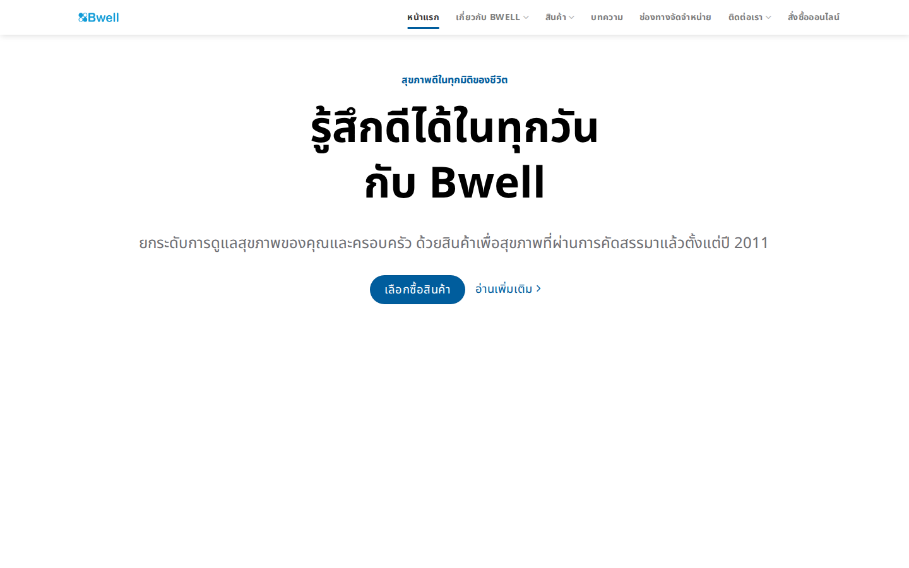
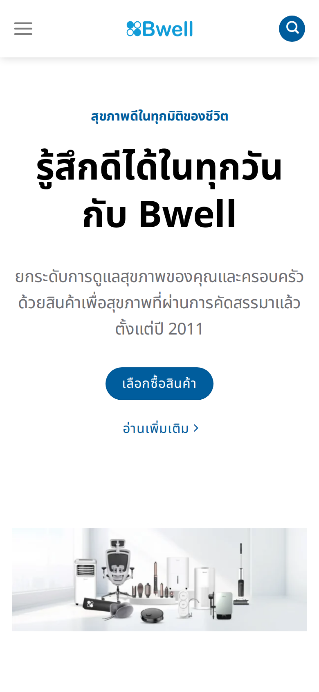
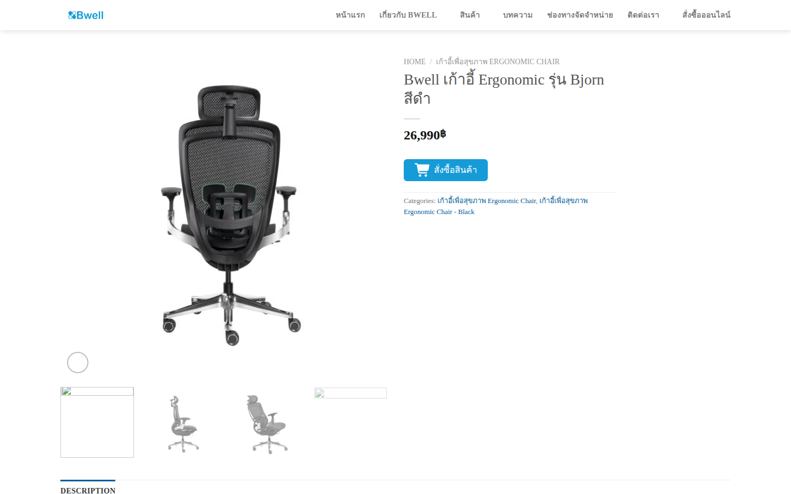
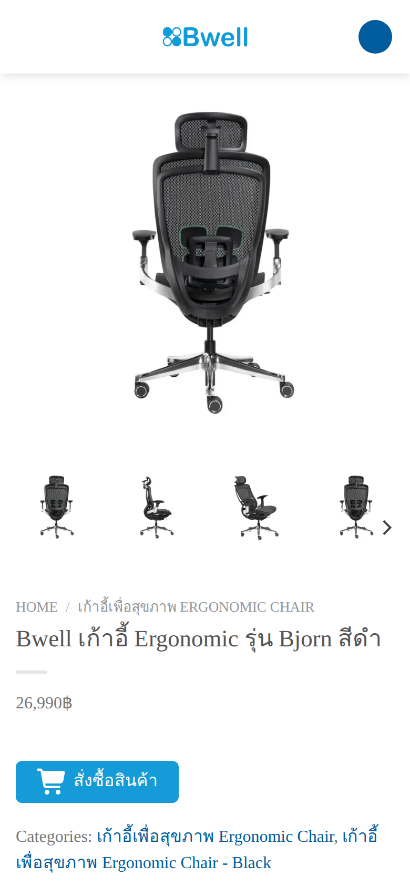
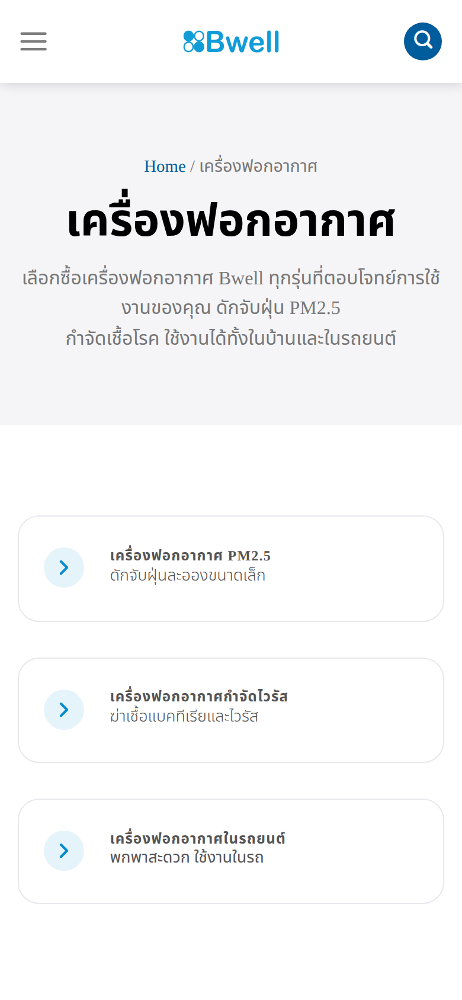
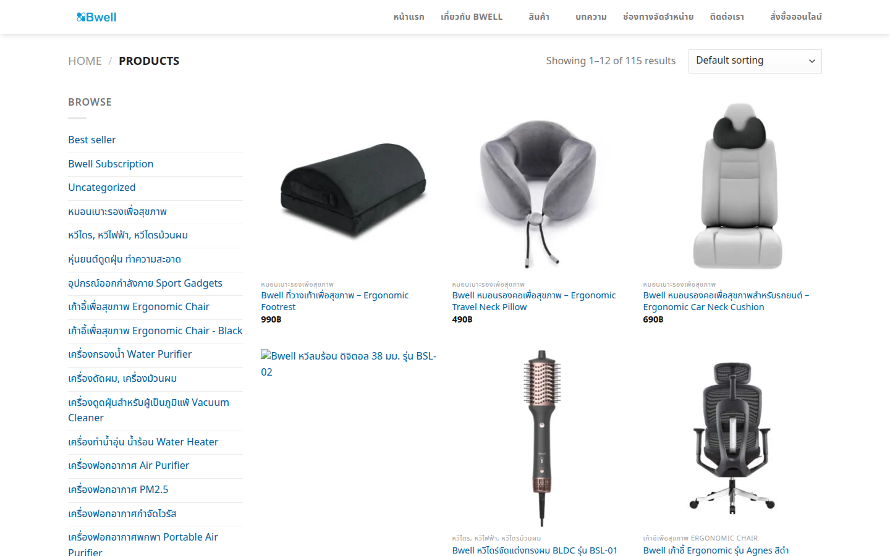
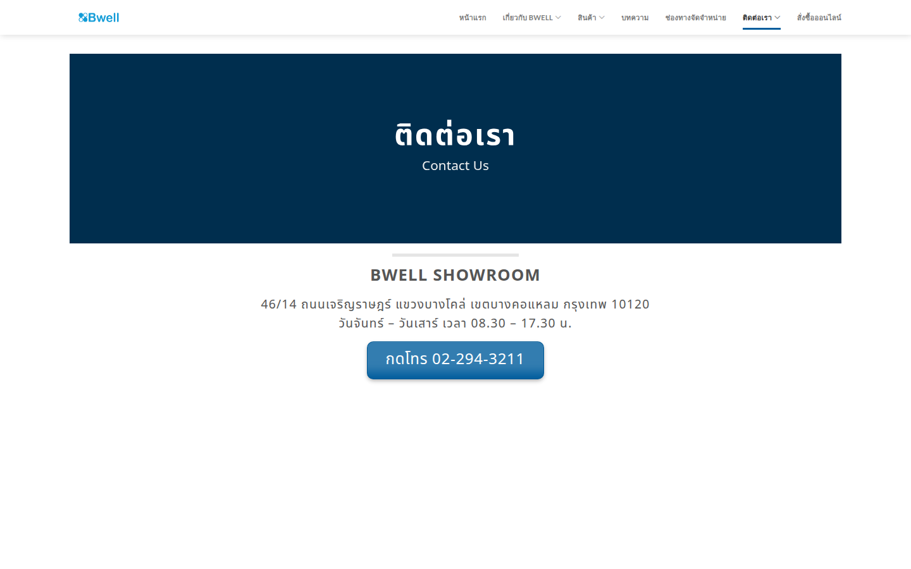
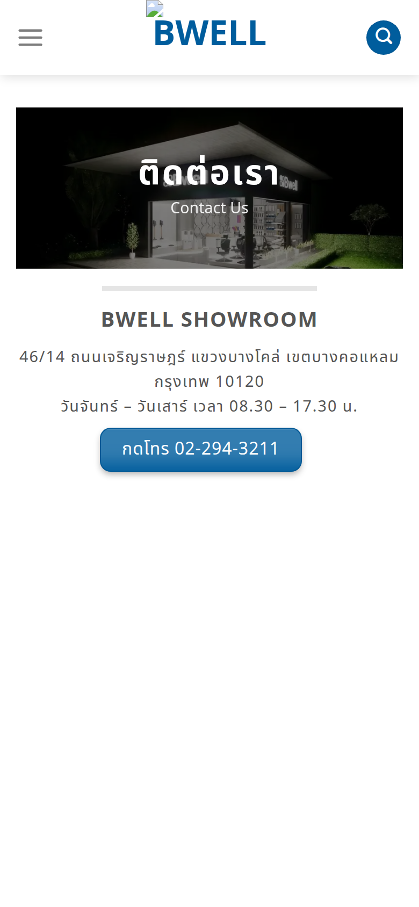
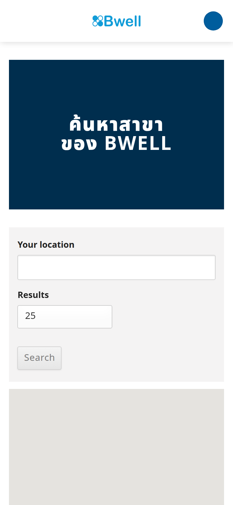
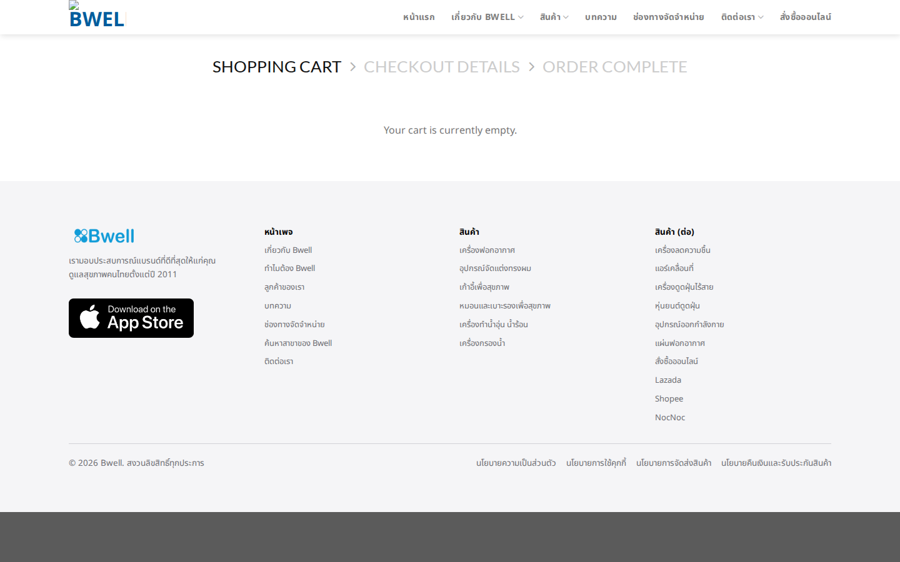
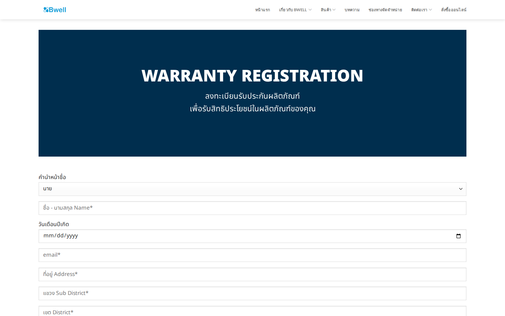
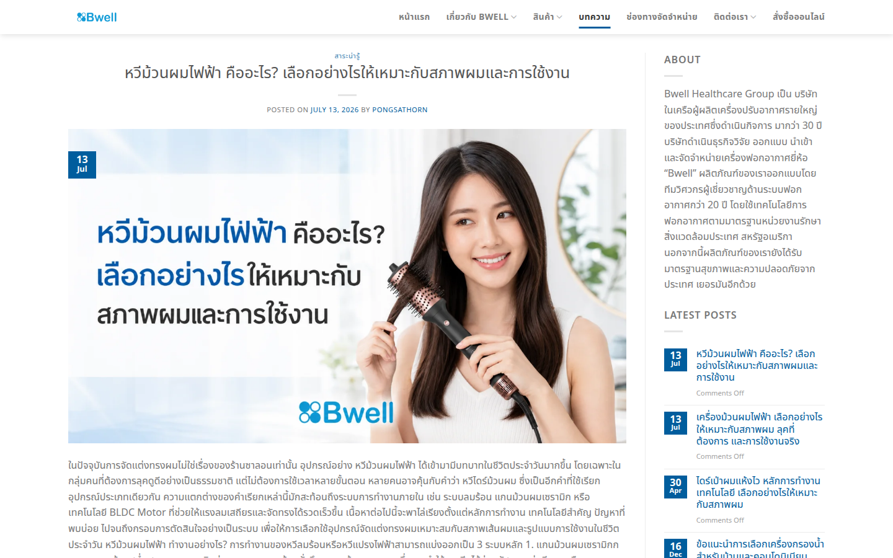
Bass ตัดสินใจ 2 เรื่องภายในสัปดาห์นี้ แล้วส่งรายงานนี้ให้ agency พร้อมกำหนด due date:
Target: ปิด P0 ทั้ง 6 ข้อ → re-review รอบ 2 → กำหนดวัน launch